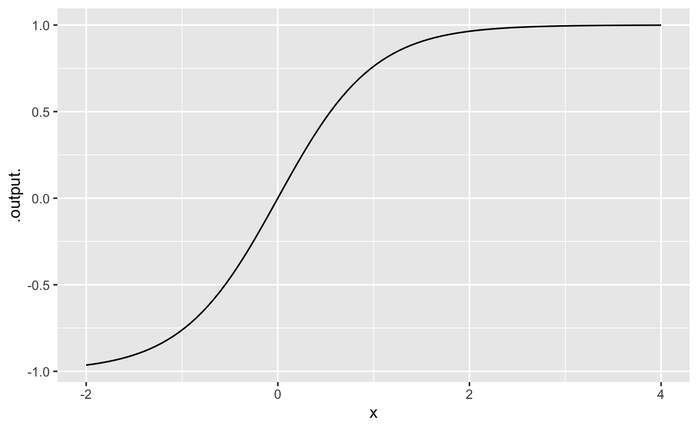

| ID: | Password: | |||
|
|
This tutorial covers the R commands used in Chapter 1 of Kilty and McAllister’s Mathematical Modeling and Applied Calculus. You can ignore the “Working in RStudio” sections in the book itself.
In this tutorial, you will learn
The new R functions you will see are:
makeFun() – turns a tilde-expression into a functionslice_plot() – graphs a function with one inputdomain() – sets the extent of the \(x\) axis (the “domain”)c() – collects its argument together into a vector.contour_plot() – graphs a function with two inputsfindZeros() – finds solutions numericallygf_refine() – adds selected refinements to plotscoord_flip() – flips the \(x\) and \(y\) axes in a plot.exp(), log(), sin(), cos() – the R implementation of the eponymous mathematical functions.Make sure to review the R Syntax tutorial [IN DRAFT: GIVE LINK] before starting this tutorial.
A formula is a mathematical expression that describes an arithmetic calculation. For example, \(m c^2\) is a formula introduced by Albert Einstein to describe the energy of a particle as a function of mass and the speed of light.
Math textbooks love to write functions using \(x\) and \(y\), for instance,
\[y = 5 + 2 x . \]
In this traditional notation, the formula is on the right-hand side of =. The \(y\) on the left-hand side of = is more or less meaningless. There is nothing explicit in the notation to say what the input(s) are to the function.
In the MMAC textbook, they use this traditional notation often. In our own notes, we will use a better mathematical notation:
\[f(x) \equiv 5 + 2 x .\] You may wonder what makes this notation better. Clearly, it is more verbose. But that provides some advantages:
Consider Einstein’s energy formula. The function based on this formula could be written:
\[E(m) \equiv m c^2 .\] Notice that \(E\) is simply a function of \(m\). That’s because the speed of light is constant, roughly 300,000km per second.
Let’s implement \(E(m)\) as an R function. We’ll do this with a tilde expression that specifies not only the formula (\(m c^2\)) but which of the symbols in the formula are variables and which not. The tilde expression for Einstein’s energy function is
m * c^2 ~ mTo transform the tilde expression into an R function, use makeFun(), like this:
E <- makeFun(m * c^2 ~ m)You might wonder how the function E() knows the value of c. That’s a topic for Chapter 2.
Finally, a small reminder. Traditional mathematical notation uses very extensively one-letter names, like \(E\) or \(x\) or \(y\). With computer notation, you can often be more effective by selecting names that remind you of what the thing you’re creating is for. For instance, perhaps better to have created a function mass_energy() rather than E(), like this:
mass_energy <- makeFun(mass * speed_of_light^2 ~ mass)Practice 1: Consider this formula for wing drag as a function of lift:
\[\mbox{drag} = 3.825\ \mbox{lift} + 1.63\times10^{-3}\ \mbox{lift}^2\] PUT THE REAL FORMULA HERE. PICK ONE THAT HAS NUMERICAL PARAMETERS. AND FIX THE -check code correspondingly. ALSO, GIVE UNITS FOR THE PARAMETERS AND SAY WHAT UNITS the drag and lift are to be measured in.
Using makeFun(), create a function corresponding to the formula.
# For debugging only
drag <- makeFun(1.33 * lift / 10 ~ lift)grade_result(
fail_if( ~ names(formals(.result))[1] != "lift",
"The function should take `lift` as an argument."),
fail_if( ~ ! (.result(10) > 1.32 && .result(10) < 1.34),
"Check your tilde-expression. It's not matching the formula."),
pass_if( ~ TRUE)
)MMAC 1.1.81: Using R, define the function
\[f(x) \equiv \frac{\pi(9.852 x^3 - 10.375 x)}{(9 \pi)^2 + 27 x}\]
To help you get started, we’ve put some text in the code box. But the text is not correct R syntax. You’ll have to fix it so that it is a legitimate R expression. Then you’ll have to make sure that your expression says the same thing as the mathematical definition. (Hint: The spacing of the tilde-expression across lines helps to make it easier to read.)
# Setup code goes heref <- makeFun(
pi(9.852x3 - 10.375x) / 9 pi 2 + 27 x ~ x
)f <- makeFun(
pi*(9.852*x^3 - 10.375*x) / ((9 * pi)^2 + 27 * x) ~ x
)
grade_result(
fail_if( ~ !inherits(.result, "function"), "You should be creating a function"),
fail_if( ~ !names(formals(.result)) == "x", "The argument to the function should be named `x`."),
fail_if( ~ .result(10) != f(10),
"Your tilde expression doesn't exactly correspond to the mathematical definition given in the problem."),
pass_if( ~ TRUE)
)[This section replaces the “Working in RStudio” box on p. 14 of the MMAC book.]
The slice_plot() function makes graphs of mathematical functions with a single input. As you know, it’s conventional to draw the graph with the function input on the horizontal axis and the function output on the vertical axis.
When making a graph, you need to choose what region of the number line the horizontal axis should cover. This region is called the domain of the graphic. Many mathematical functions have function domains that cover the whole number line (that is, \(-\infty\) to \(+\infty\)) or the positive half of the number line (that is, 0 to \(+\infty\)). But even though you can legitimately evaluate the mathematical function at any point in its function domain, it’s not possible to draw a graph that runs to \(-\infty\) or \(+\infty\). (Imagine how big the computer screen would have to be! Even a screen the size of the galaxy wouldn’t do it.) So, you have to make choices of the part of the function domain that is to be included in the graphic domain. Typically this choice is based on context: the region of interest.
The domain() function is used within slice_plot() to set the graphic domain. Here’s an example:
slice_plot(tanh(x) ~ x, domain(x = c(-2,4)))
Just FYI, the mathematical \(\tanh()\) is called the “hyperbolic tangent” or, for short, pronounced “tanch” which rhymes with “branch.” It is an example of a “sigmoidal function,” so called because it has a double bend similar to the one in the letter “S.”
Let’s take apart the how slice_plot() is used.
slice_plot() takes two arguments. The first is a tilde expression of exactly the same sort as used in makeFun(). The second is the domain, as produced by the domain() function.
domain() itself takes arguments. Here, since there is only one input variable in the function, there is a single argument: a named argument with the same name as used on the right-hand side of the tilde expression. The value of that named argument is a pair of numbers: one specifying the left side of the graphic domain, the other specifying the right side. In our example, the argument is x = c(-2, 4), setting the graphic domain to be \(-2 \leq x \leq 4\). (Domains are often written in a different notation. In that notation, the domain would be written \(x \in [-2, 4]\).)
c() does something simple but essential. It collects the two numbers–here \(-2\) and \(4\)–into a single package. That two-number package becomes the argument x, allowing you to specify both ends of the graphic domain at once. Some people prefer to use the range() function, which is another way of producing a package of two numbers. Either will work fine.
MMAC Question 1.1.8: Using slice_plot(), graph the function \(y(x) \equiv -3.546 x - 9.128\) on the domain \(x \in [-15, 15]\)
slice_plot(- 3.546 * x - 9.128 ~ x, domain(x = c(-15, 15)))grade_code()